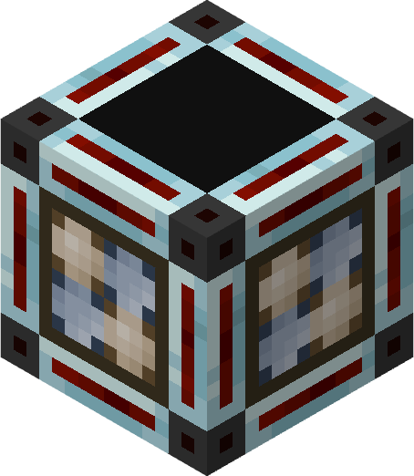

Overview
The Weather Detector is a block used to power redstone when storms are nearby.
Crafting

Usage
this block emits a redstone signal if a dangerous storm is within 100 blocks of it.

The Weather Detector is a block used to power redstone when storms are nearby.
this block emits a redstone signal if a dangerous storm is within 100 blocks of it.